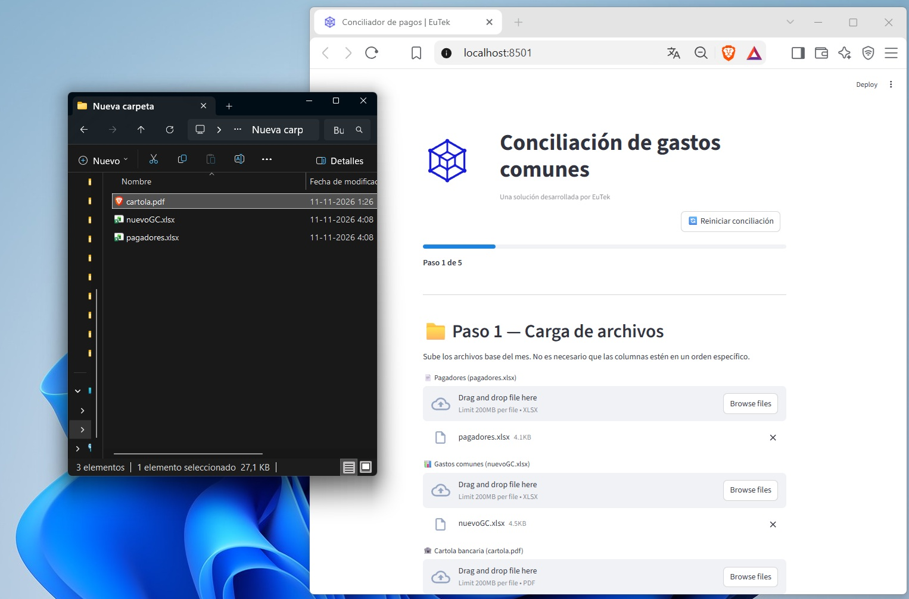
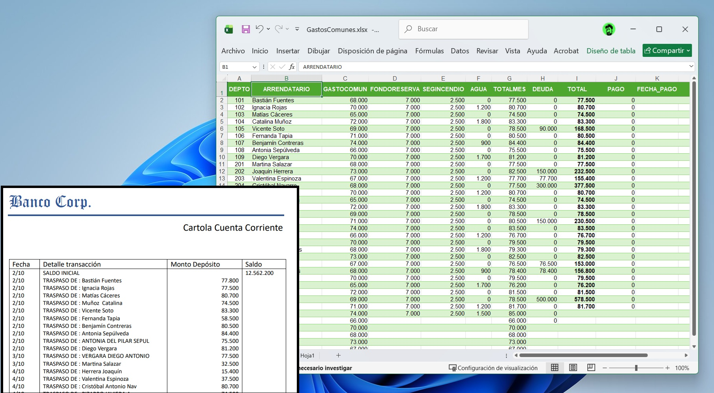
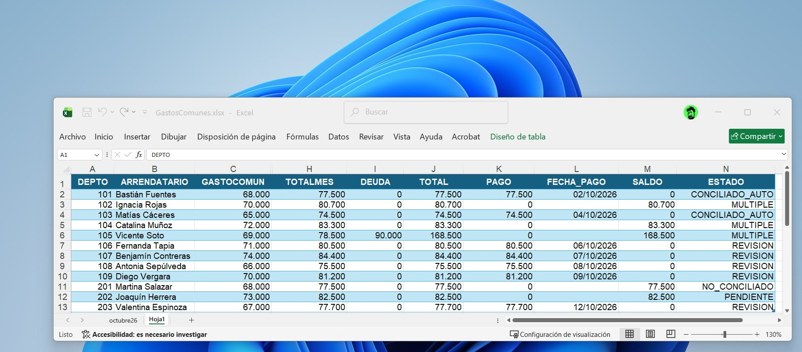

Menos repetición
Comparaciones y búsquedas que antes se hacían manualmente pasan a ser asistidas por reglas.
Caso de aplicación · Automatización asistida
Menos trabajo manual. Más control sobre los pagos. Una solución que aprovechó los archivos existentes y concentró la revisión humana en los casos que realmente la necesitan.
Comparación informada para este caso particular; no constituye una estimación general para otras organizaciones.

Cada mes, una administración de comunidades debía relacionar los depósitos bancarios con los pagos de gastos comunes de cada departamento. La información existía, pero cruzarla requería una jornada completa de trabajo.
El problema no era la falta de información, sino el esfuerzo necesario para relacionarla correctamente.

Desarrollamos una herramienta de conciliación bancaria asistida que integra cartolas, planillas de gastos comunes y registros de pagadores, sin exigir reemplazar los documentos con los que la administración ya trabajaba.
Por requerimiento del cliente, desarrollamos la aplicación para ejecutarse directamente en su computador, sin conexión a internet durante la conciliación. Los archivos se procesan localmente, sin depender de plataformas externas para realizar ese trabajo.

Según la experiencia informada para esta implementación, el trabajo mensual pasó de ocupar una jornada completa a realizarse en aproximadamente una hora.
Comparaciones y búsquedas que antes se hacían manualmente pasan a ser asistidas por reglas.
Los movimientos ambiguos se distinguen de los identificados y pueden revisarse por separado.
La metodología se repite cada mes con los archivos habituales de la administración.
No se trató de reemplazar todo el sistema de trabajo, sino de comprender qué funcionaba, reducir los cruces innecesarios y aprovechar las herramientas existentes.
Al partir desde documentos y prácticas conocidas, buscamos facilitar la adopción de la solución e incorporar mejoras tecnológicas de manera progresiva.
La tecnología es una herramienta. El criterio es lo que genera valor.
Conversemos sobre tus procesos y exploremos maneras de simplificarlos, aprovechando lo que ya funciona en tu organización.
Conversemos sobre tu proceso